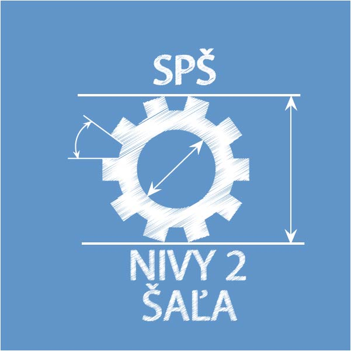

Ing. Roman Varga
My name is Roman Varg and I was born in Galanta on May of 1987. I am sigle. These days I live in Bratislava, capital city of Slovakia.
- rv
- 0910 579 485
- Bratislava
I have engineer degree from Faculty of Electrical Engineering and Information Technology. I am non-conflict person, but when there is no other way, every-time I solve the problems with clear mind. I like to be part of society with open mind to new way of solutions
Education
Faculty of Electrical Engineering and Information Technology, Bratislava
Specialization: Applied Informatics
SPS
Specialization: Electrical
Elementary school
Šaľa
Work Experience
- Samsung Electronics Slovakia: 1.9.2012 - now
Engineer
- KVANT spol s. r. o. : 1.1.2010 - 1.1.2011
Technican
Features and capabilities
- Personal skills:
Non-conflict person, non-smoker, willing to travel, hardy, tolerant, empathetic, disciplined, discreet
- Driving skills:
Group B
- Electrotechnics skills:
§23-Electrician for the management activities or operations management
- Network skills:
(CISCO)Junior
Language skills
- English:
- Slovak:
Computer skills
- HTML/CSS:
Advace
- PHP
Advace
- JavaScript
Advace
- C
Advace
- C#
Intermediate
- SQL
Intermediate
- Unix/Linux
Intermediate
Hobies and interest
- Sport:
Volleyball, soccer, airsoft,
- Other:
Photographing, New technology, IoT, Hiking, Travel